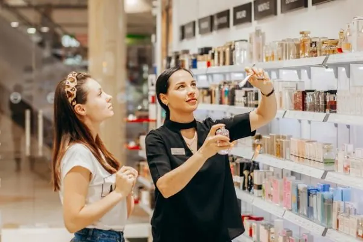

Gids
Winkelen in Nijmegen
De binnenstad van Nijmegen is compact en gezellig om te winkelen, met grote ketens in de hoofdstraten en kleine speciaalzaken in straatjes als de Lange Hezelstraat.
Hier vind je onze winkeltips en praktische info voor een dagje stad.
Praktisch
Waar parkeer je en hoe kom je er? Alle parkeergarages, tarieven en de goedkope en gratis plekken staan in onze gids Parkeren in Nijmegen.
Speciaalzaken
Voor tweedehands parels, bloemen, geuren en sieraden.

Parels vinden in Nijmeegse kringloopwinkels
Tweedehands shoppen in Nijmegen? Dit zijn de leukste kringloopwinkels van de stad, met adressen en tips om echte parels te vinden.
Bloemist Nijmegen – Waar Kun je Terecht?
Op zoek naar een mooi boeket? Dit zijn de leukste bloemisten in Nijmegen, voor een verjaardag, bruiloft of gewoon voor jezelf.

Laat je verleiden door de geuren uit de parfumerieën van Nijmegen
Op zoek naar een nieuwe geur? Dit zijn de leukste parfumerieën in Nijmegen, van bekende merken en niche-parfums tot cosmetica en advies.

Ga eens naar de juwelier, om te shinen
Een sieraad kopen of laten maken? Waarom een bezoek aan de juwelier de moeite waard is, voor jezelf of als cadeau.
Meer gidsen over dit onderwerp
Andere gidsen: wonen, leren en werken
Kledingwinkels in Nijmegen
Heb je zelf een kledingwinkel? Kom hier als partner te staan.